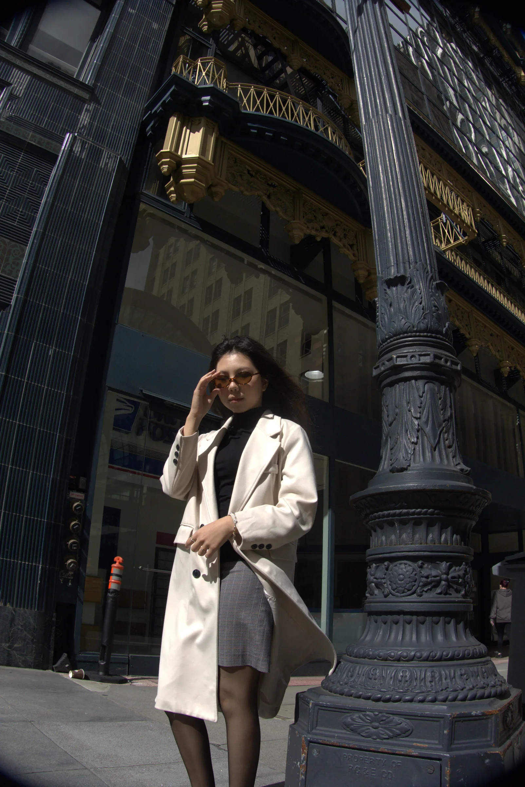

About.

performing-arts kid from Astana — 10+ international stage singing, theatres, lights & cameras. i learned to be bold and land it the first take. in my mind: cool = never embarrassed.
but how i switched to tech is a bigger reason. i like fun stuff, but i want fun stuff to be meaningful, because otherwise it makes no sense. i like pushing myself to my limits, putting myself out to deliberate challenges. this will make me do things beyond human comprehension.
i'm 18, just finished up my freshman year at Minerva University in SF, double majoring in Computer Science and Business. it's ironic because i used to be called naturally "non technical" because of arts.
Minerva University — Business & CS (3% acceptance rate)
HS: Bilim Innovation Boarding School for Gifted Girls — 4% acceptance
hobbies
i like to treat my own brain like a system i can rewire.
- got rid of a 10 year nail-picking habit.
- drop into deep focus by doodling left-handed.
- play piano standing up.
- building a 5 octave vocal range.
- learning languages with the previous language i've learned (e.g. learning russian with kazakh, english with russian, turkish with english, and french with turkish) — almost fluent in 5 so far.